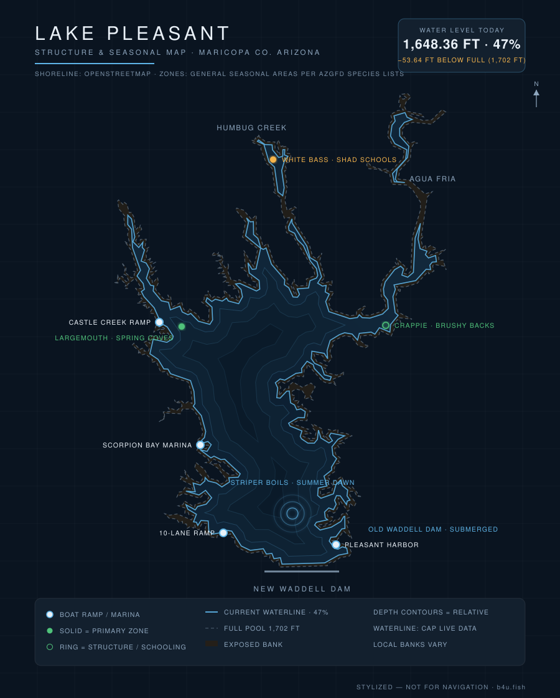

Lake Pleasant is the largest lake near the Phoenix metro and one of the most reliable year-round bass and striper fisheries in central Arizona. Here's what to know before you launch — plus live conditions updated every day.

Waterline reflects the latest level reading (stylized — not for navigation). Fish zones are general seasonal areas, not exact spots, compiled from AZGFD species lists & lake guides and published Arizona fishing reports. Water data: SRP/DWR, CAP, USACE.
Current water level, percent-full, ramp status, weather, solunar bite windows, and a daily fishing score for Lake Pleasant are tracked on the b4u.fish dashboard.
Lake Pleasant sits about 40 minutes northwest of central Phoenix, off the Carefree Highway (SR-74). It was greatly enlarged by New Waddell Dam and is filled largely with Colorado River water pumped in through the Central Arizona Project (CAP) canal — so it fills in winter and spring and draws down through the irrigation season, which strongly shapes the fishing.
Prime time. Bass move shallow to spawn as the lake fills toward full pool; target coves, points, and the backs of major arms.
Beat the heat — fish dawn and dusk. Watch for striper boils on calm mornings and work deeper structure midday. The daily score on b4u.fish flags the workable windows.
Cooling water and a drawing-down lake concentrate bait and fish; smallmouth stay active on rock. Solunar timing matters more as days shorten.
The b4u.fish dashboard combines moon phase, solunar major/minor windows, wind, cloud cover, water temperature, and barometric stability into a single daily score — so you can see at a glance whether today is worth the gas.
From central Phoenix, take I-17 north to the Carefree Highway (SR-74) and head west to the Lake Pleasant Regional Park / Scorpion Bay entrances. Pleasant Harbor has its own entrance off SR-74. A park entrance fee applies; check current hours before a dawn launch.
Full pool is 1,702 ft. Live elevation and percent-full are on the b4u.fish dashboard, refreshed several times an hour from the CAP aquaportal feed.
Largemouth and smallmouth bass, white bass, striped bass, crappie, catfish, and sunfish.
The 10-lane ramp at Scorpion Bay and the ramps at Pleasant Harbor. Usable lanes shift with the water level — current ramp status is on the dashboard.
Spring for the bass spawn; summer dawns for striper boils. Year-round, the solunar windows and daily score on b4u.fish help you pick the hour.